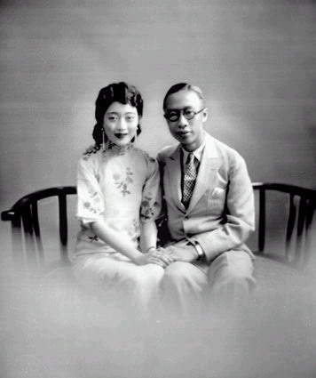

Nếu lúc Từ Hi Thái Hậu từ trần mà nhà Thanh có được một lãnh tụ sáng suốt và cương quyết cỡ như vua Quang Tự, thì ngai vàng của nhà Thanh vẫn còn có thể giữ vững được một thời gian nữa....Nhưng bây giờ triều đình nhà Thanh nằm dưới quyền điều khiển của Nhiếp chính vương Thuần Thân Vương, một người không có khả năng và rất nhu nhược, thì không khác gì một chiếc xe đang lăn xuống dốc và không có cách nào xoay chuyển để cứu vãn được nữa.

Việc làm đầu tiên của Thuần Thân Vương là cách chức Viên Thế Khải. Việc cách chức Viên Thế Khải là do sự tuân theo lời di chúc của vua Quang Tự. Trong suốt những ngày cuối cùng bị giam cầm, vua Quang Tự rất căm thù Viên Thế Khải đã phản bội mình, khiến nhà vua không những mất ngôi thiên tử mà còn không thực hiện được những hoài bão của nhà vua cho Trung Hoa. Khi vua Quang Tự bị đầu độc theo lệnh của Từ Hi Thái Hậu, thì Từ Hi thân hành đến thăm Quang Tự để chính mắt mình nhìn thấy cái chết của nhà vua. Khi Từ Hi tới thăm thì Quang Tự đã mệt yếu lắm rồi, phải có hai thái giám xốc nách dìu ra, đầu gục xuống và hai chân run rẩy không đứng vững. Trong một giây phút Từ Hi cũng xúc động tình dì cháu, nên phán bảo, “Ta miễn lễ, không phải quỳ nữa!“ Vài giọt lệ chảy xuống trên khuôn mặt trát bự phấn của bà Thái hậu già.
Nhưng Quang Tự vẫn quỳ xuống và nói, ”Thần nhi xin được phép quỳ! Một lần cuối cùng!” Sau khi Từ Hi ra về, Quang Tự run rẩy cố gắng viết di chúc: “Sau khi ta chết, phải chặt đầu... “ Viết đến đó thì Quang Tự yếu quá không thể viết tiếp tên Viên Thế Khải được nữa, nhưng cũng cố khoanh một vòng tròn trước khi tắt thở. “Viên“ có nghĩa là “tròn”. Thuần Thân Vương muốn thi hành di chúc của ông anh nhưng không đủ can đảm chặt đầu Viên Thế Khải. Một tháng sau khi Phổ Nghi lên ngôi, Thuần Thân Vương chỉ ra một đạo dụ ngày 2 tháng 1 năm 1909, cách chức họ Viên. Đạo dụ này có chữ ký của Phổ Nghi, và viết:
“Khi Trẫm lên ngôi thì được tin bất ngờ Viên Thế Khải mắc chứng bệnh đau chân, vì thế Trẫm cho phép Viên tướng quân được rời chức vụ và trở về sinh sống tại quê nhà để chữa trị. Đây chính là lòng quý mến và nể trọng của trẫm đối với Viên tướng quân.”
Việc bãi chức Viên Thế Khải quả thực là một quyết định thiếu khôn ngoan của Thuần Thân Vương. Khi ra khỏi Bắc Kinh rồi thì con người quỷ quyệt Viên Thế Khải còn nguy hiểm cho triều đình nhà Thanh hơn là bị giữ lại trong triều, lúc nào cũng có người nhòm ngó theo dõi. Dưới áp lực của giới quý tộc Mãn Thanh, Thuần Thân Vương phải hoãn việc thi hành những chương trình cải cách của Từ Hi Thái Hậu. Nhưng quyết định này chỉ như đổ thêm dầu vào một lò lửa đang muốn bốc lên của một quần chúng đang muốn tiêu diệt một nền quân chủ chuyên chế lỗi thời. Rồi khi bị quần chúng phản đối thì Thuần Thân Vương lại mau lẹ thi hành chương trình cải cách, và tuyên bố sẽ thành lập quốc hội vào năm 1913, nghĩa là bốn năm sớm hơn chương trình cũ dự liệu. Thuần Thân Vương giải thích rằng ông làm như vậy là ước muốn tạo ra một nước Trung Hoa mạnh mẽ và thống nhất. Nhưng các tổ chức chống đối thì lại cho rằng đó là một dấu hiệu yếu đuối của nhà Thanh. Các tổ chức này đòi hỏi giải tán Đại Hội Đồng Quý Tộc Mãn Thanh và thay thế bằng một nội các, và yêu cầu Bắc Kinh không được vay thêm tiền của ngoại quốc nữa.
Bên trong Đại Hội Đồng Quý Tộc Mãn Châu, cuộc bàn cãi vẫn tiếp diễn trước con mắt ngây thơ của Phổ Nghi. Phe bảo thủ trong hội đồng ở thế mạnh và yêu cầu Thuần Thân Vương không được làm bất cứ nhượng bộ chính trị nào nữa. Hội đồng đòi hỏi dùng quân đội dẹp tất cả mọi cuộc biểu tình của sinh viên và thanh niên chống lại Thanh triều. Giữa lúc tình hình chính trị đang rối rắm như thế, một bệnh dịch hoành hành tại các tỉnh miền trung Trung Hoa, và sông Dương Tử vỡ bờ gây nạn lụt lớn lao tàn phá mùa màng của cả một vùng rộng lớn. Nạn đói trầm trọng xẩy ra khắp nơi khiến dân chúng oán trách nhà Thanh, và cho rằng nhà Thanh không còn được lòng trời nữa. Người Trung Hoa tin rằng ngai vàng của một triều đình là nguyên nhân đem lại phúc lợi cũng như thảm họa cho dân chúng.
Nương theo sự suy yếu của Thanh triều, các phong trào bài Thanh và bài Tây Phương bành trướng mau lẹ. Các tổ chức bí mật đổ lỗi cho nhà Thanh đã làm Trung Hoa suy yếu. Luận điệu của các phong trào phản Thanh này được nhiều người tán đồng, và đạt được một sự hậu thuẫn rộng rãi của một quần chúng đang căm phẫn sự yếu kém của Thanh triều, và sự nhục nhã của người Trung Hoa trước sức mạnh của ngoại bang. Các giới sinh viên, trí thức và quân nhân tại thành thị được coi là nòng cốt cho các phong trào phản Thanh.
Các phong trào phản Thanh tuy quá sôi nổi ồn ào, nhưng lại thiếu một sự thống nhất. Tất cả mọi tổ chức đều đồng ý trong mục tiêu như: Sự cần thiết phải canh tân Trung Hoa, chống lại sự xâu xé đất nước của ngoại cường, bảo đảm quyền tự chủ cho các tỉnh, và phải có đại diện các tỉnh tại thủ đô Bắc Kinh. Nhưng làm thế nào để đạt được các mục tiêu trên đây thì chẳng ai đồng ý với ai cả. Một số người đề nghị thiết lập một chính thể Quân Chủ Lập Hiến và giữ vua Tuyên Thống, tức Phổ Nghi, trên ngai vàng. Người khác thì đòi phải lật đổ nhà Thanh, chấm dứt sự cai trị của người Mãn Châu và thành lập một nước Cộng Hoà. Một trong những lãnh tụ nổi tiếng nhất đòi chấm dứt nhà Thanh là Tôn Văn.
Tôn Văn hiệu là Trung Sơn, người huyện Dương Sơn, tỉnh Quảng Đông. Thoạt đầu Tôn Văn học y khoa tại Quảng Đông. Trước sự áp bức của ngoại cường và nền chính trị hủ bại của nhà Thanh, ông chủ trương phải lật đổ nhà Thanh và thành lập Dân Quốc để cứu Trung Hoa. Ông đứng lên buộc tội sự bất lực của nhà Thanh đã đưa Trung Hoa vào một tình trạnh bán thuộc địa nhục nhã đáng xấu hổ. Năm 1892 Tôn Văn đến Áo Môn và lập ra Hưng Trung Hội, và bắt đầu dấn thân hoạt động trong công cuộc cứu nước một cách thực tế.
Ông tới đảo Hạ Uy Di của Mỹ để lập thêm chi nhánh Hưng Trung Hội. Năm 1895, ông trở về nước để khởi nghĩa và mưu đánh chiếm Quảng Châu, nhưng việc bị bại lộ, và các đồng đảng của ông bị bắt và bị giết trên 70 người. Ông may mắn trốn thoát và xuất ngoại hoạt động. Ông liên lạc với Hồng Môn Hội, một hội chủ trương phản Thanh phục Minh. Ông và Hồng Môn Hội xác định lại mục tiêu mới là: Khu trừ người Mãn, khôi phục Trung Hoa, lập dân quốc và bình quân địa quyền. Chính nghĩa được sáng tỏ nên đảng của ông càng ngày càng mạnh thêm.
Năm 1905 Tôn Văn sang Nhật vì tại Nhật có rất nhiều thanh niên Trung Hoa du học. Ông đổi tên Hưng Trung Hội của ông thành Đồng Minh Hội, đặt trụ sở tại Đông Kinh. Rất nhiều thanh niên Trung Hoa gia nhập Đồng Minh Hội. Thấy khí thế mạnh mẽ của Đồng Minh Hội, Thanh triều yêu cầu người Nhật trục xuất ông. Hàng loạt những cuộc nổi dậy của Đồng Minh Hội tại các tỉnh miền nam không thành công, nhưng cũng gây tiếng vang rất lớn. Năm 1911 Đồng Minh Hội quyết định hành động lớn, tung 500 cảm tử quân tấn công dinh Tổng Đốc Quảng Đông, nhưng kế hoạch có nhiều sơ hở, quân cảm tử tới nơi mà không có vũ khí, nên cuộc tấn công thất bại. Kết quả là 72 cảm tử quân bị giết. Bảy mươi hai tử thi này được đem an táng tại Hoàng Hoa Cương, và được gọi là Thất Thập Nhị Liệt Sĩ.
CUỘC CÁCH MẠNG TÂN HỢI
Vì cuộc tấn công của Đồng Minh Hội tại tỉnh Quảng Đông nên Thanh Triều rất lo ngại, và ra lệnh cho các tỉnh phải đề phòng nghiêm mật. Tổng Đốc Hồ Bắc là Thụy Trừng truy lùng được nhiều đảng viên cách mạng, và còn lấy được danh sách những đảng viên khác. Quân sĩ dưới quyền Thụy Trừng bí mật tham gia đảng cách mạng bỗng lâm vào thế nguy, đằng nào cũng kẹt rồi, nên họ đành phải vội vàng đứng lên hành động. Đêm ngày 10 tháng 10 năm 1911, quân sĩ Hồ Bắc nổi dậy, tự xưng là quân cách mạng, vây đánh dinh Tổng Đốc. Thụy Trừng và viên chỉ huy quân sự sợ quá bỏ trốn. Quân nổi dậy liền chiếm thủ phủ Hồ Bắc là Võ Xương, và cử một sĩ quan cao cấp tên là Lê Nguyên Hồng làm thủ lãnh để thành lập chính phủ. Chính phủ Lê Nguyên Hồng tuyên bố độc lập và tiến quân đánh Hán Dương. Trong khi đó một toán cướp đánh chiến Hán Khẩu và giao thành phố cho chính phủ Lê Nguyên Hồng. Ngày nổi dậy tại Võ Xương được gọi là ngày Song Thập, và trở thành ngày Quốc Khánh của Trung Hoa Dân Quốc từ đó đến nay.
Ngày 11 tháng 10 năm Tân Hợi, đại biểu 17 tỉnh miền nam họp tại Nam Kinh bầu Tôn Văn làm Lâm Thời Đại Tổng Thống. Tôn Văn cử Lê Nguyên Hồng làm Phó Tổng Thống. Các đại biểu thành lập Tham Nghị Viện và tổ chức nội các theo giống đường lối chính trị của Hoa Kỳ, và lấy danh hiệu Trung Hoa Dân Quốc. Thanh thế của phe cách mạng ngày một lớn. Thanh Triều rất lấy làm bối rối trong lúc đó Phổ Nghi còn mải chơi đùa với lũ thái giám.
Thanh triều phái quân Mãn Thanh tới đánh Võ Xương, nhưng bị quân cách mạng đánh bại. Không những thế, quân Mãn Thanh còn đào ngũ bỏ theo quân cách mạng rất đông. Trước tình cảnh ấy, chỉ một người đủ khả năng cứu vãn tình thế là Viên Thế Khải. Thuần Thân Vương phải quên mối thù cá nhân của mình và phải hạ mình mời Viên Thế Khải ra chỉ huy quân Thanh chống lại quân cách mạng. Thoạt đầu Viên Thế Khải từ chối lời mời của Thanh triều, với lý do sức khoẻ, nhưng vẫn không quên nhấn mạnh Viên chỉ chấp nhận ra cứu nước với điều kiện nắm giữ chức Tể Tướng và chức tổng tư lệnh quân đội. Ngày 1 tháng 11, Thuần Thân Vương phải chấp nhận yêu sách của Viên Thế Khải, nhưng Viên vẫn từ chối. Nhiều gia đình quý tộc Mãn Thanh đem gia đình và tài sản trốn về Mãn Châu. Thanh triều tê liệt và cách mạng vẫn tiếp tục lan tràn hết thành phố này tới thành phố khác.
Cuộc bỏ chạy của người Mãn về Mãn Châu tạo ra những cuộc cướp bóc tấn công các khu vực của người Mãn khắp nơi. Tại những thành phố cô lập, những khu vực của người Mãn Châu bị dân chúng tấn công, cướp bóc và tàn sát người Mãn, trong khi triều đình Mãn Thanh bất lực không thể bảo vệ che chở được cho thần dân của mình. Khu vực người Mãn Châu tại Tây An Phủ bị đốt cháy thành bình địa. Đàn ông, đàn bà và trẻ con, kể cả đàn bà chửa, đều bị giết hết. Nhiều người Mãn phải nhảy xuống giếng tự tử, người khác đốt nhà để chết cùng với những quân cướp hôi của.
Người Hán săn đuổi người Mãn khắp nơi, từ những đô thị trong nội địa tới những hải cảng, để trả thù cho sự thống trị gần ba thế kỷ của người Mãn. Người Mãn phải cải trang làm người Hán để lẩn trốn về Mãn Châu. Khi một người Mãn bị khám phá ngoài đường phố thì lập tức bị chém đầu ngay. Hàng trăm hàng ngàn người Mãn đã bị giết như vậy. Người Mãn rất dễ bị người Hán nhận ra vì giọng nói và nhất là quần áo. Người Mãn rất ưa dùng các màu đỏ, màu vàng với đường viền màu trắng, cổ áo cao, ống tay hẹp, thắt lưng rất hoa mỹ và giày dép. Riêng đàn bà người Mãn thì lại càng dễ nhận diện hơn nữa, vì chân họ không bị bó lại như người Hán.
Ngày 15 tháng 11, Thuần Thân Vương lại tam cố thảo lư, yêu cầu Viên Thế Khải đứng ra giúp nhà Thanh một lần nữa. Lần này vì thời cơ đã đến nên Viên Thế Khải nhận lời ngay. Thực ra chủ tâm của Viên Thế Khải là cố tình chậm trễ để không còn cách nào cứu vãn nhà Thanh được nữa, và dùng chức vụ của nhà Thanh để tạo ra một triều đại mới cho mình. Chỉ sáu tuần lễ sau ngày cách mạng Song Thập thành công, nhà Thanh chỉ còn lại năm tỉnh, trong đó ba tỉnh vốn thuộc về Mãn Châu. Nhưng Viên Thế Khải rất tự tin khi ra nắm chức tổng tư lệnh quân đội miền Bắc, và mở cuộc Nam tiến đánh quân cách mạng.
Viên Thế Khải mau lẹ chiếm lại Hán Dương và tiến quân về Hán Khẩu. Nhưng thay vì tiến quân tấn công quân cách mạng, Viên Thế Khải quay trở lại Bắc Kinh và yêu cầu được gặp Thuần Thân Vương và tân Thái Hậu, mẫu hậu của Phổ Nghi. Viên Thế Khải biết rằng mình đang nắm giữ được thế quân bình giữa Phổ Nghi và Tôn Văn. Nếu Viên Thế Khải nghiêng về bên nào thì bên ấy sẽ thắng. Nhưng Viên Thế Khải không chịu nghiêng về bên nào cả, mà chỉ lo cho tham vọng cá nhân của riêng mình. Trước hết Viên Thế Khải muốn kiểm soát được triều đình nhà Thanh.
Trong một tháng tại Bắc Kinh, Viên Thế Khải bắt Thuần Thân Vương phải từ chức Nhiếp Chính. Thuần Thân Vương vui lòng từ chức, và chức Nhiếp Chính bây giờ bỏ trống. Trên thực tế, Viên Thế Khải trở thành Nhiếp Chính Vương. Rồi Viên Thế Khải chiếm ngân khố Hoàng Gia với lý do cần tiền chi dụng cho chiến phí. Như vậy Viên Thế Khải nắm chắc trong tay ba thứ quyền mạnh nhất: Chính trị, quân sự và tài chánh. Sau đó Viên Thế Khải ngầm ra lệnh cho các nhà ngoại giao Trung Hoa tại ngoại quốc đánh điện yêu cầu vua Phổ Nghi thoái vị, để tránh một cuộc nội chiến và sự xâu xé của quân đội ngoại bang.
Viên Thế Khải vào cung uy hiếp Thái Hậu, và cho toàn thể nội các biết rằng giải pháp duy nhất là thành lập chế độ Cộng Hoà, và bãi bõ chế độ quân chủ. Các giới quý tộc Mãn Châu hết sức kinh hoàng trước đề nghị của Viên Thế Khải. Thực ra trong thâm tâm, Viên Thế Khải đang nuôi dưỡng mộng thành lập một triều đại mới, thay thế nhà Mãn Thanh. Viên Thế Khải đứng giữa hai thế lực. Một bên là triều đình cũ đang cố gắng giữ vững ngai vàng, và một bên là nước Cộng Hoà mới đang muốn thành hình. Viên Thế Khải đã thành công tạo cho mình một địa vị rất thuận lợi mà cả hai phe đều cần đến. Nếu Viên Thế Khải có thể ép Phổ Nghi thoái vị thì Viên Thế Khải có thể dùng kết quả đó như là một công lớn để đối phó với Tôn Văn. Tôn Văn chắc sẽ phải nhường chức Tổng Thống cho Viên Thế Khải để tránh một cuộc nội chiến. Viên Thế Khải sẽ tìm cách khôi phục Đế Chế sau khi nắm được chức Tổng Thống.
Phổ Nghi cũng có mặt trong buổi hội kiến giữa Viên Thế Khải và Thái Hậu, và nghe Viên Thế Khải đề nghị Phổ Nghi thoái vị. Lúc đó Phổ Nghi mới có năm tuổi, nhưng sáu tuổi tính theo người Trung Hoa. Phổ Nghi không bao giờ quên được buổi hội kiến đó trong điện Dưỡng Tâm. Thái Hậu ngồi khóc trên một chiếc xập, và Phổ Nghi ngồi ngay bên cạnh bà. Viên Thế Khải béo phục phịch đứng trước mặt hai mẹ con, nước mắt đầm đìa hai cặp má phính. Phổ Nghi rất ngạc nhiên thấy hai người lớn này khóc. Viên Thế Khải vừa hỉ mũi vừa nói nhưng Phổ Nghi chẳng hiểu họ Viên nói những gì. Đó cũng lần đầu tiên Phổ Nghi gặp Viên Thế Khải.
Trong buổi hội kiến, Viên Thế Khải bàn tới số phận của Phổ Nghi nếu nhà Mãn Thanh không chịu nhượng bộ. Viên Thế Khải nói với Thái Hậu, ”Chậm thoái vị có thể dẫn Hoàng Đế tới số phận tương tự như số phận của vua Lô Y thập lục của nước Pháp và gia đình trong cuộc cách mạng Pháp. Nếu nhà Mãn Thanh tìm cách bảo vệ ngai vàng thì hậu quả xấu xa không thể lường được. Trung Hoa sẽ bị tàn phá khủng khiếp trước sự can thiệp của quân đội ngoại bang, và sẽ có những sự chém giết tàn sát lẫn nhau giữa hai giống dân Hán Mãn.“
Sau đó, đại Hội Đồng Quý Tộc Mãn Thanh cũng vội vàng hội họp và thảo luận bên trong điện Thái Hoà. Thái Hậu kể lại cho hội đồng những gì Viên Thế Khải đã nói với bà. Hội đồng không quan tâm đến hậu quả của cuộc cách mạnh Pháp, nhưng rất đỗi xúc động và chán nản trước sự phản bội của Viên Thế Khải đối với nhà Đại Thanh. Phe quá khích phản đối đề nghị Phổ Nghi thoái vị và chủ trương dùng biện pháp quân sự chống lại cách mạng. Đúng lúc ấy, Binh Bộ Thượng Thư báo cáo một đơn vị quân Mãn Thanh đang tấn công quân cách mạng tại Nam Kinh và chiến thắng. Một nhân vật quá khích nữa là Thượng Thư Bộ Lại đề nghị rằng dù gặp hoàn cảnh tệ nhất thì vẫn có thể rút lui về Mãn Châu bên ngoài Vạn Lý Trường Thành, và giữ lại được đất nước Mãn Châu. Vị Thượng Thư này chủ trương rằng phải giữ vững ngai vàng của nhà Đại Thanh. Nhưng cuối cùng Hội Đồng bác bỏ kế hoạch rút về Mãn Châu, vì các đạo quân Mãn Thanh đóng rải rác tại phía nam Vạn Lý Trường Thành và tại Mãn Châu không đủ điều kiện chiến đấu. Hơn nữa Hội Đồng lý luận rằng, nếu cả Trung Hoa và Mãn Châu đều yếu kém thì miền đất tổ Mãn Châu cũng sẽ bị ngoại bang xâu xé ngay.
Trong lúc Hội Đồng Quý Tộc Mãn Thanh còn mải tranh luận tìm biện pháp đối phó với tình thế, thì càng lúc Viên Thế Khải càng lo ngại thêm. Nếu Phổ Nghi chậm thoái vị bao nhiêu thì uy thế Tôn Văn, đối thủ chính trị của Viên Thế Khải, càng lúc càng mạnh thêm bấy nhiêu. Tuy nhiên Viên Thế Khải cũng hiểu rất rõ con người của Tôn Văn. Tôn Văn là một con người thuần lý tưởng, sẵn sàng hy sinh quyền lợi cá nhân mình cho đại cuộc, không màng chức tước và danh lợi, miễn là lý tưởng lật đổ Thanh triều và thành lập một nước Trung Hoa Dân Quốc thực hiện được, còn ai lãnh đạo quốc gia thì không mấy quan hệ. Tôn Văn sẵn sàng nhường chức Tổng Thống cho Viên Thế Khải, nếu Viên Thế Khải áp lực được Phổ Nghi thoái vị để tránh một cuộc nội chiến tương tàn. Điều Tôn Văn mong ước nhất là Phổ Nghi thoái vị một cách êm đẹp, và lúc đó chỉ có Viên Thế Khải mới có tư thế tạo ra được một sự thoái vị mà Tôn Văn mong đợi.
Một cuộc mặc cả chính trị quyết liệt đang diễn ra giữa hai phe Tôn Văn và Viên Thế Khải. Họ Viên giao công việc quân sự cho bộ hạ Đoàn Kỳ Thụy để rảnh tay đối phó với tình hình chính trị. Viên Thế Khải cũng cử một bộ hạ khác là tướng Phùng Quốc Chương nắm quyền chỉ huy Cấm Vệ Quân, với mục đích tước bỏ sức mạnh quân sự của Thanh Triều, và cử Đường Thiệu Nghi xuống miền Nam thương nghị với phe cách mạng. Cuối cùng Tôn Văn đề nghị năm điểm:
1. Phổ Nghi phải thoái vị.
2. Viên Thế Khải tuyên bố tán thành chế độ Cộng Hoà.
3. Sau khi Phổ Nghi thoái vị, Tôn Văn sẽ từ chức Tổng Thống.
4. Tham Nghị Viện sẽ bầu Viên Thế Khải lên chức Tổng Thống.
5. Viên Thế Khải phải tuân hành Lâm Thời Ước Pháp do Tham Nghị Viện soạn định.
Viên Thế Khải chấp thuận toàn bộ đề nghị của Tôn Văn, và sai Đoàn Kỳ Thụy cùng bốn mươi tướng lãnh trong quân đội miền bắc áp lực Thanh triều phải đi đến việc thoái vị. Đoàn Kỳ Thụy và các tướng lãnh đánh điện cho Thanh triều rằng không thể chống lại được quân cách mạng, và yêu cầu Phổ Nghi thoái vị. Đạo quân miền bắc án binh bất động, không chịu tấn công lực lượng cách mạng. Thực ra nếu lúc đó Viên Thế Khải trung thành với nhà Thanh, và dùng biện pháp quân sự thì nhà Thanh vẫn có thể giữ được ngai vàng và phần lớn đất đai Trung Hoa, còn phe cách mạnh sẽ bị khốn đốn.
Thanh triều vốn trông cậy vào sức mạnh của đạo quân miền bắc, một đạo quân thiện chiến và kỷ luật nhất của Trung Hoa lúc bấy giờ. Nhưng nay đạo quân đó bị Viên Thế Khải chi phối, chống lại triều đình thì Thanh triều đành phải khuất phục trước các yêu sách của con cáo già Viên Thế Khải.
Ngày 3 tháng 2 năm 1912, Hội Đồng Quý Tộc Mãn Thanh nhóm một phiên họp quan trọng nhất trong suốt gần ba thế kỷ lịch sử của nhà Đại Thanh. Xuất hiện trước hội đồng, Viên Thế Khải đưa ra những nhượng bộ quan trọng nhất cho Thái Hậu. Viên Thế Khải muốn sớm đạt được sự thoái vị nên đưa ra các điều kiện đầu hàng rất hấp dẫn cho Thanh triều và người Mãn. Các nhượng bộ của Viên Thế Khải cho Thanh triều cũng là một tính toán quỷ quyệt của họ Viên. Viên Thế Khải rất ưu đãi Hoàng Gia và không tiêu diệt hẳn ngai vàng nhà Thanh, vì trong thâm tâm họ Viên vẫn chủ trương sẽ tái lập đế chế và lên ngôi Hoàng Đế khi tình hình cho phép.
Trong buổi họp, phe chủ chiến nhất quyết đòi tiếp tục chiến đấu, ít nhất cũng để trả thù cho vụ tàn sát người Mãn Châu tại Tây An và các nơi khác. Thái Hậu bước ra đặt nghi vấn, “Nếu chúng ta quyết chiến mà thất bại, thì sao? Liệu chúng ta có thể đòi lại được các điều kiện ưu đãi của Viên Thế Khải không?”
Không ai trả lời được câu hỏi của Thái Hậu, và từ đó một triều đại phải chấm dứt. Cuối cùng Thanh triều chấp nhận giải pháp thoài vị để được hưởng các điều kiện ưu đãi của Viên Thế Khải.
Những ngày kế tiếp sau đó, Thanh triều bận rộn sửa soạn các đạo dụ thoái vị và đưa ra những yêu sách cuối cùng cho Viên Thế Khải. Ngày 12 tháng 2 năm 1912, Thanh triều công bố đạo dụ thoái vị. Quyền cai trị Trung Hoa của nhà Đại Thanh chấm dứt.
Đối với đa số người bình dân Trung Hoa thì sự giải tán hệ thống cai trị của một Hoàng Đế là một điều ngoài sức tưởng tượng của họ. Đối với người Trung Hoa thì quan niệm “một ngày không thể không có vua” đã ăn sâu vào tư tưởng họ. Không có thiên tử thì ai sẽ cai trị thần dân? Vị sứ thần tại Bắc Kinh đánh điện về Hoa Thịnh Đốn như sau: “Đây là một biến cố vô cùng ngoạn mục khi một phần tư nhân loại lật đổ một hình thức chính phủ, đó cũng là một biểu lộ tuyệt đối của nền một văn minh trên bốn ngàn năm.”
Trong lúc đó bên trong Cấm Thành, Phổ Nghi, một đứa trẻ năm tuổi vẫn không biết gì về những làn sóng cách mạng đang tràn ngập Trung Hoa. Đối với vị tiểu Hoàng Đế này thì đời sống không có gì thay đổi, vẫn tiếp tục chơi đi trốn đi tìm với bầy thái giám.
Ba ngày sau khi Phổ Nghi thoái vị, lãnh tụ cách mạnh Tôn Văn đem lễ vật tới dâng hương tại lăng tẩm của Vua Hồng Võ, vị Hoàng Đế khai sáng nhà Minh. Tôn Văn đến trước lăng tẩm này để tấu trình với hương hồn vị hoàng đế đầu tiên nhà Minh rằng ngai vàng đã lấy lại được về cho người Trung Hoa từ người ngoại lai Mãn Châu rồi.
Lời tấu trình của Tôn Văn trước ngôi cổ mộ mang đầy tính chất kỳ thị chủng tộc, và đầy tinh thần quốc gia, đã làm thế giới Tây Phương phải kinh ngạc. Hành động của cha già dân tộc Tôn Văn phản ảnh lại tâm tình căm phẫn của người Trung Hoa phải sống gần ba thế kỷ dưới sự cai trị của người ngoài. Tôn Văn kính cẩn tuyên bố:
“Đã nhiền lần trong lịch sử, dân tộc Trung Hoa cao quý đã phải làm nô lệ cho các giống dân mọi rợ phương bắc. Cuối cùng ngày nay kinh đô Bắc Kinh đã phục hồi lại cho một chính phủ của người Trung Hoa. Long Hổ cường thịnh sẽ trấn giữ đế đô. Thần dân hôm nay đến đây để dâng cho Hoàng Đế chiến thắng mới của dân tộc. Cầu nguyện nơi yên nghỉ của Hoàng Đế sẽ đời đời xanh tươi nhờ biến cố ngày hôm nay, và cầu mong tấm gương sáng của Hoàng Đế sẽ là nguồn cảm hứng cho các thế hệ sắp tới. Cúi xin anh linh Hoàng Đế chấp nhận lễ vật này.”
NHỮNG ƯU ĐÃI DÀNH CHO THANH TRIỀU
SAU KHI PHỔ NGHI THOÁI VỊ
Các sử gia có thể cho rằng Thanh Triều đã rất khôn ngoan khi chấp thuận để Phổ Nghi thoái vị, từ bỏ quyền chính trị tuyệt đối của một thiên tử. Có lẽ Hội Đồng Quý Tộc Mãn Thanh nghĩ rằng sự thoái vị sẽ tránh được sự can thiệp của ngoại bang, tránh được sự phân chia Trung Hoa làm hai quốc gia, và cũng bảo đảm được quyền lợi của giới quý tộc Mãn Thanh. Kết quả cuối cùng cho thấy quyền lợi của người Mãn được bảo đảm, nhưng sự thoái vị của Phổ Nghi vẫn không giúp Trung Hoa thoát khỏi một cuộc nội chiến và sự can thiệp của ngoại bang. Kể từ khi nhà Thanh sụp đổ, Trung Hoa rơi vào tình trạng hỗn loạn triền miên, và cuối cùng cảnh hỗn loạn tại Trung Hoa đã mời gọi sự can thiệp của ngoại quốc, khởi đầu là người Nhật tại phía nam Vạn Lý Trường Thành.
Bình thường một triều đại mới ít khi đối xử đẹp với triều đại cũ. Khi một hoàng đế dựng nghiệp bằng cách lật đổ một triều đại khác thì thường tìm cách chu diệt tất cả dòng họ của ông vua cũ để trừ hậu hoạ. Nhưng hoàn cảnh của Phổ Nghi là một trường hợp rất đặc biệt, khiến cho nhà vua được hưởng một quy chế chưa từng có trong lịch sử Trung Hoa.
Các đạo dụ thoái vị của Phổ Nghi được viết trên những cuộn lụa mầu vàng. Đạo dụ giải thích rằng Hoàng Đế quyết định thoái vị vì quyền lợi của quốc gia và quần chúng. Quốc gia thực sự là một đại gia đình trong đó Thiên Tử là cha mẹ và quần chúng là con cái. Trong đạo dụ, Thái Hậu đã đại diện cho Phổ Nghi, không những tuyên cáo sự thoái vị của ấu chúa, mà còn long trọng muốn thành lập một nước Cộng Hoà Trung Hoa. Đạo dụ bắt đầu như sau:
“Vì hậu quả của cuộc nổi dậy của quân đội Cộng Hoà, có sự ủng hộ của các tỉnh, đã khiến Đế Quốc Trung Hoa chìm đắm trong cảnh máu lửa và thần dân rơi vào cảnh khốn cùng. Chính thể của một nước một ngày không định thì nhân dân không được yên. Nay quyền cai trị quốc gia trở thành việc làm chung của dân chúng toàn quốc. Một chính thể Cộng Hoà Lập Hiến sẽ được thiết lập, trước nhất là để thoả mãn lòng mong đợi của trăm họ, sau nữa là cho hợp với ý nghĩa “Thiên hạ là của chung“ của thánh hiền ngày trước.
Làm thế nào chúng ta có thể đi ngược lại ý nguyện của hàng trăm triệu con dân mong ước cho sự vinh quang của một gia đình? Do đó, sau khi cứu xét khuynh hướng của hiện tại và nghiên cứu quan điểm của quần chúng, triều đình và Hoàng Đế quyết định trao quyền lực quốc gia tối cao vào tay dân chúng, và muốn có một hình thức chính phủ theo hiến pháp. Như vậy, triều đình quyết định chấp nhận ban hành theo ý muốn của một quần chúng đã mệt mỏi vì cảnh hỗn loạn vô chính phủ, và mong ước có hoà bình, để tạo phúc lợi cho dân chúng Trung Hoa.”
Đạo dụ kêu gọi phải thiết lập một nước Cộng Hoà Trung Hoa vĩ đại bằng cách kết hợp cả năm giống dân, gồm Mãn Châu, Hán Tộc, Mông Cổ, Hồi Hồi và Tây Tạng, và giữ nguyên lãnh thổ hiện hữu.
Đạo dụ thứ hai chú trọng đến cách đối sử lịch sự với người Mãn Châu. Nhân vụ tàn sát người Mãn Châu tại Tây An Phủ, đạo dụ kêu gọi dân chúng hãy bỏ mọi thành kiến và dị biệt về sắc tộc. Đạo dụ cũng bầy tỏ mối quan tâm của Thanh triều về việc đối xử với các vị vua khai sáng ra nhà Đại Thanh, và đòi hỏi tân chính phủ phải chịu trách nhiệm về “việc tế tự trước các đền thờ và các lăng tẩm của các cựu Hoàng Đế nhà Đại Thanh, và phải xây lăng tẩm cho vị Hoàng Đế cuối cùng nhà Thanh đã từ trần là vua Quang Tự.”
Đối với Phổ Nghi thì đạo dụ thứ hai đã xác định rõ ràng như sau: “Ta, đương kim Hoàng Đế, sẽ chỉ từ bỏ quyền lực chính trị của ta mà thôi, còn danh hiệu Hoàng Đế của ta vẫn phải được giữ nguyên vẹn như cũ.” Như vậy số phận của ông vua sáu tuổi đã được minh định. Phổ Nghi chỉ không hành sử quyền Thiên Tử mà thôi, nhưng vẫn giữ các tước hiệu Hoàng Đế như cũ. Thanh triều cố ý chờ thời cơ để có thể xoay chuyển phục hồi lại được triều đình nhà Đại Thanh. Đạo dụ tiếp tục:
“Hoàng Đế nhà Đại Thanh tuyên cáo thành lập một chính thể Cộng Hòa, và nước Cộng Hoà Trung Hoa phải nghiêm chỉnh thực thi những điều kiện ưu đãi dưới đây đối với Hoàng Đế:
1. Phải coi Phổ Nghi như là một vị nguyên thủ quốc gia.
2. Hàng năm phải cung ứng cho Phổ Nghi một ngân khoản 4 triệu quan.
3. Phổ Nghi vẫn được sống trong Cấm Thành như cũ.
4. Giữ tôn hiệu nhà Thanh khi tiếp xúc với nước ngoài.
5. Bảo hộ lăng miếu nhà Đại Thanh.
6. Các tước Vương Công vẫn được thế tập như trước.
7. Người Hoàng tộc không phải đi lính.
8. Tài sản của người Mãn Châu phải được bảo đảm.
9. Chính thể Cộng Hoà hứa tôn trọng và bảo vệ tài sản của Phổ Nghi.
Phổ Nghi vẫn được dùng vệ sĩ như trước, nhưng không được bổ nhiệm thêm thái giám nữa. Chế độ thái giám phải được bãi bỏ. Như vậy Phổ Nghi thoái vị nhưng vẫn giữ được ngai vàng, một trường hợp chưa từng xảy ra trong lịch sử. Phổ Nghi không bị giết hoặc bị đi đầy như các ông vua thất thế khác. Tuy nhiên đây là một sản phẩm trong đó cả ba phe liên hệ đều có lợi. Trước hết Tôn Văn đạt được lý tưởng phản Thanh, thành lập được nước Trung Hoa Dân Quốc, tránh được nội chiến, và sự can thiệp bất lợi của ngoại bang. Phổ Nghi vẫn giữ được ngai vàng mặc dù vô quyền, nhưng cánh cửa trở lại ngôi thên tử vẫn hé mở, và giới quý tộc nhà Thanh vẫn hy vọng một sự trở lại.
Riêng dối với Viên Thế Khải thì đây là một thắng lợi to lớn cho tham vọng làm hoàng đế của họ Viên. Viên Thế Khải muốn lưu giữ một chế độ Hoàng Gia để sau này gặp dịp thuận lợi sẽ tái lập lại chế độ Quân Chủ mà không gây ngỡ ngàng cho quần chúng.
Ngày 12 tháng 2 năm 1912, sau khi Phổ Nghi thoái vị thì một số gia đình hoàng gia và giới quý tộc đã phải ẩn lánh trong các khu vực ngoại giao tại Bắc Kinh. Một số khác thì trốn vào các khu vực Tô Giới thuộc quyền quản trị của các nước Tây Phương tại Thiên Tân. Thuần Thân Vương, thân phụ của Phổ Nghi cũng trở về nhà riêng. Trong khi đó Viên Thế Khải bỗng trở thành nhân vật quan trọng nhất trên chính trường, vừa là Tể Tướng của nhà Đại Thanh vừa là Tổng Thống lâm thời của nước Trung Hoa Dân Quốc.
Phổ Nghi coi như bị giam lỏng bên trong Cấm Thành và sống hết tuổi trẻ bên trong những bức tường cao và những lâu đài mái cong mầu vàng. Lịch sử đôi khi có những trùng hợp lạ lùng. Năm 1644 vị hoàng đế đầu tiên của nhà Đại Thanh là Thuận Trị lên ngôi vào lúc 6 tuổi, và năm 1912 vị hoàng đế cuối cùng của nhà Đại Thanh thoái vị cũng vào năm 6 tuổi.
Khi Phổ Nghi thoái vị rồi thì Tôn Văn nhường chức Đại Tổng Thống cho Viên Thế Khải. Tôn Văn sai Thái Nguyên Bồi lên mời Viên Thế Khải xuống Nam Kinh nhận chức. Viên Thế Khải không muốn rời khỏi nơi hùng cứ của mình nên bí mật sai một nhóm binh sĩ do Tào Côn chỉ huy nổi loạn. Thái Nguyên Bồi sợ miền Bắc có biến nên đề nghị Viên Thế Khải tuyên thệ chịu chức tại Bắc Kinh. Viên Thế Khải lập chính phủ mới và dời chính phủ từ Nam Kinh đến Bắc Kinh. Tôn Văn được Viên Thế Khải bổ nhiệm làm bộ trưởng hoả xa. Bây giờ Viên Thế Khải chia xẻ Cấm Thành với Phổ Nghi, vì một phần của Cấm Thành dùng làm dinh Tổng Thống.
Ấn tượng lâu dài nhất của Phổ Nghi là mầu vàng chói. Cả cái thế giới chung quanh cậu bé sáu tuổi này là thuần một mầu vàng, mầu của hoàng đế. Chính Phổ Nghi cũng đã kể lại: “Bất cứ khi nào tôi nhớ lại tuổi thơ ấu thì trí óc tôi thấy đầy một màn sương mầu vàng.“ Cung điện cũng sơn mầu vàng, từ mái cho tới sàn. Quần áo, giường gối tất cả đều mầu vàng, ngay cả đến chén đĩa ăn uống cũng mầu vàng. Mầu vàng vốn được coi là mầu hoàng gia của người Trung Hoa, nguyên do là vì văn minh Trung Hoa khởi đầu từ những lớp phù sa mầu vàng của sông Hoàng Hà. Từ lâu chỉ nhà vua mới được dùng mầu vàng, và bất cứ một người nào khác dùng mầu này đều bị trừng phạt.
Phổ Nghi hàng ngày chỉ chơi đùa với các thái giám, cho đến năm lên bảy tuổi thì mới được chơi đùa với các trẻ con khác, đó là người em trai tên là Phổ Kiệt và một người em gái. Phổ Kiệt sau này là một đồng chí đứng cạnh Phổ Nghi trong suốt những năm tháng thăng trầm sôi nổi của Phổ Nghi. Tuy nhiên tuổi trẻ của Phổ Nghi trong Cấm Thành lúc nào cũng bị bao vây bởi một đoàn thái giám đông đảo.
Việc học của Phổ Nghi bắt đầu từ lúc sáu tuổi và do một nhóm sư phó giảng dậy. Các sư phó của Phổ Nghi không được phép ngồi trước mặt Phổ Nghi và cũng không được phép khen ngợi Phổ Nghi. Các vị sư phó thường nhắc tới gương các ông vua thời trước, chẳng hạn như: “Hoàng Đế Càn Long bằng tuổi Ngài học giỏi hơn.” Phổ Nghi lúc nào cũng phải cố gắng tranh đua với các vị tiên đế. Phổ Nghi cũng học cả tiếng Mãn Châu. Nhưng Phổ Nghi không phải là người học trò gương mẫu, mà trái lại thường giả vờ đau ốm để bỏ học.
Về sau ý thức được vai trò của mình, Phổ Nghi mong ước trở thành một vị hoàng đế danh tiếng. Nhưng những sách vở khác nhau làm cậu bé hoang mang. Trong khi sách Khổng Tử dạy thần dân phải trung thành với vua, thì sách Mạnh Tử dạy “Dân vi qúy“ hoặc “Nếu vua coi thần dân như cỏ rác thì thần dân phải coi vua như kẻ thù.“
Lúc Phổ Nghi được tám tuổi, để khuyến khích Phổ Nghi học hành hăng hái hơn nên người ta mở rộng lớp học, cho cả Phổ Kiệt và một số trẻ con khác đồng lứa tuổi được học chung với Phổ Nghi. Mỗi sáng Phổ Nghi ngồi kiệu tới lớp học. Thường các vị sư phụ và các trẻ con khác tới trước để chờ đợi Phổ Nghi. Khi Phổ Nghi vào tới lớp, các vị sư phụ phải khấu đầu chào Phổ Nghi, và các trẻ con khác phải quỳ gối xuống. Sau đó các học sinh được ngồi vào bàn. Phổ Nghi ngồi đầu bàn về hướng Bắc và hướng mặt về phía Nam. Cách ngồi như thế có thể là lý do theo thiên văn, vì khi ngồi quay về hướng Nam, nhà vua có thể theo dõi được sự chuyển động của mặt trời.
Phổ Nghi không học về toán và khoa học như trẻ con ngày nay, mà chỉ học về nước cổ Trung Hoa, các lý thuyết âm dương, Ngũ Hành: Kim Mộc Thuỷ Hoả Thổ, và các nghi lễ một vị hoàng đế thường làm. Một sự học mơ hồ cả về địa lý đến nỗi Phổ Nghi không biết Bắc Kinh nằm đâu tại Trung Hoa và lúa gạo được trồng như thế nào. Năm Phổ Nghi lên 13 tuổi, các vị sư phó quyết định rằng Phổ Nghi cần phải học ngoại ngữ và Anh Ngữ được chọn cho Phổ Nghi vì sự phổ quát của Anh Ngữ, và cũng vì thiện cảm đối với người Hoa Kỳ không xâm lăng Trung Hoa.